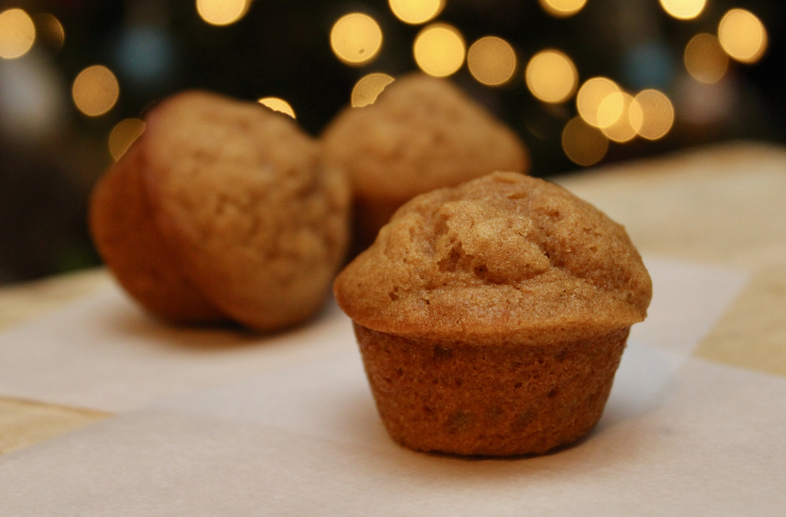

Sweet Potatoe Muffin

Description
This is a recipie for a sweet potatoe muffin, a delicious treat for anyone. Even though a sweet potatoe is thought to go with savory dishes it is exceptionally good for baking treats such as this one
Added bonus: this recipe just happens to be dairy free, a plus for those who are intolerant to dairy.
Ingredients
- 1 cup white sugar
- 2 cup cooked, mashed sweet potatoe
- 1/2 cup olive oil
- 1/3 cup of water
- 2 eggs, beaten
- 1 2/3 cups all purpose flour
- 1 teaspoon ground cinnamon
- 1 teaspoon baking soda
- 1/2 teaspoon baking powder
- 1/2 teaspoon salt
- 1/2 cup chopped pecans
Steps
- Preheat the oven to 350 degrees F (175 degrees C). Grease a 12-cup muffin pan or line with paper liners.
- Combine sugar, sweet potato, olive oil, water, and eggs in a bowl. Combine flour, cinnamon, baking soda, baking powder, and salt in a second bowl. Add flour mixture and pecans to the sweet potato mixture. Fold gently until just moistened, being careful not to overmix. Spoon batter into the prepared muffin cups, filling each 3/4 full.
- Bake in the preheated oven until a toothpick inserted into the center comes out clean, 20 to 25 minutes. Do not overbake. Remove from oven and cool on wire rack.